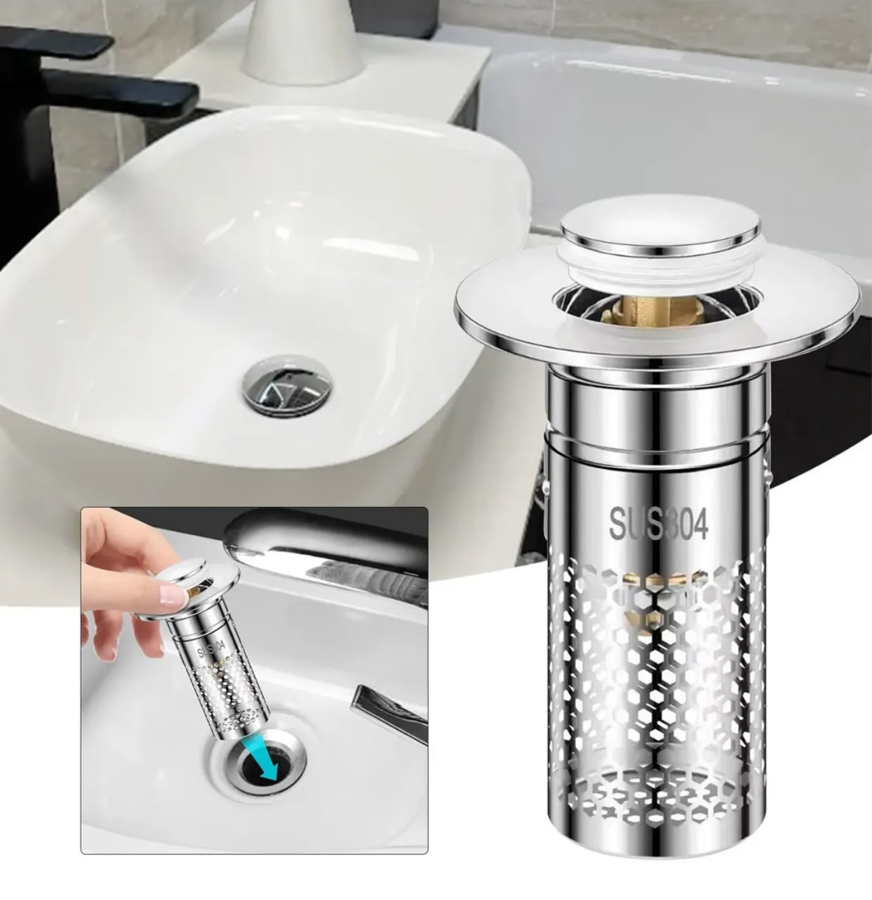
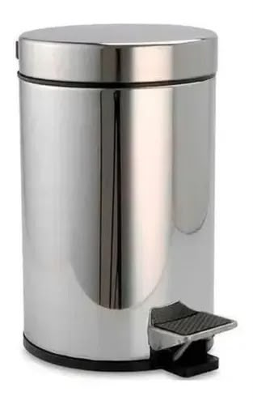
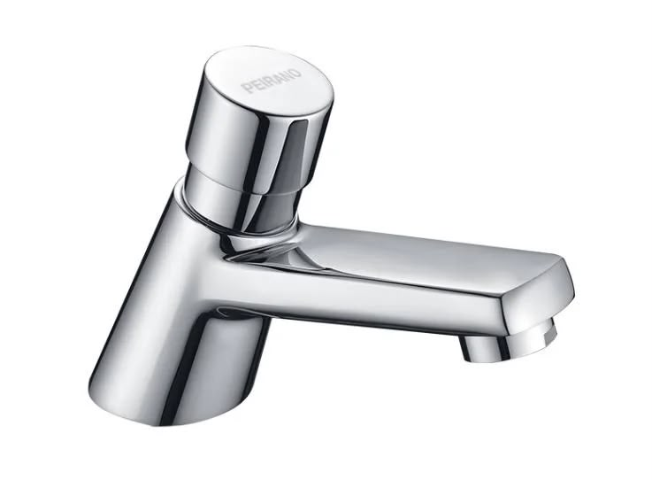

¿ Preguntas ?
¿Qué hábitos de la comunidad escolar empeoran la situación? ¿Los alumnos dejan las canillas o grifos abierto durante los recreos o falta una reflexion sobre el valor del recurso?
¿Cuál es el estado de la escuela? ¿Existen pérdidas visibles en cañerías, tanques de agua o artefactos obsoletos que consumen más de lo debido?
Sugerencias
Buenas Prácticas
Promover el cuidado del establecimiento y el cierre de canillas y el reporte inmediato de fugas a los directivos
Propuestas de mejoras en la instalación
Sugerir la instalación de canillas con temporizador (pulsadores) que reducen la pérdida sin perder presión.
Prácticas para reducir los residuos
Colocar cestos de basura en baños y filtros en los lavabos para evitar el estancamiento de cañerías
Multimedia
Imágenes sobre cosas que podrian ayudar a reducir el desperdicio de agua en la escuela


